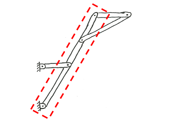

Truss Structures
To the right is an example of a Pratt truss being used to support the road surface for a bridge. A truss structure is a specific type of engineering structure. An engineering structure is any system of connected members that is designed to hold or withstand some load. The bridge to the right consists of a number of steel members that are bolted and welded together, designed to safely support the weight of the road surface and any vehicles that may be on the road surface. When engineers analyze and design engineering structures, they often seek to identify the internal forces that act on the members of the structure in order to avoid potential failures. The forces applied to each member are calculated by breaking the system down into its separate members, drawing free body diagrams for each member, and solving for the interaction forces between the members using the equations of static equilibrium.
There are a number of methods used to solve for internal forces in truss structures, but in order to use these methods the engineering structure must meet the assumptions of a statically determinate truss structure. These assumptions are:
- Each member in the engineering system must be joined to other members in exactly two places, generally at each end of the member. If any one member has only one connection point the structure is not statically determinate. If there are three or more connection points on any one member, the structure is not a truss structure; it is either a frame or a machine.
- The members must form a rigid structure. If any part of the structure can move or rotate independent of another part of the structure, the system is not statically determinate.
|
This structure meets all the requirements of being a statically determinate truss structure.
|
|
|

This structure is not a truss structure. The member outlined in red has more than two connection points. This engineering structure is a frame.
|
This structure is not statically determinate. The member outlined in red has only one connection point and can rotate independently of the rest of the structure. If the member outlined in red were removed, the structure would then be a statically determinate truss structure.
|

This structure is not a statically determinate because the structure is not rigid. The two halves of the structure can rotate independently around the joint outlined in red.
|
This structure is not statically determinate because the structure is not rigid. The square central section outlined in red allows the structure to deform even if all members are perfectly rigid.
|
In trusses, it is assumed that the joints (the connectors between the members) exert forces on the members but they do not exert moments on the members. Even if the connectors between the members can exert moments on the members, it is typically assumed the moments applied to the members are negligible when compared to the forces applied to the members in the truss.
If the system qualifies as a truss structure, each member in the system has only two forces acting on it (one at each connection point) and as discussed earlier it is assumed that each member has no moments acting upon it. Because we know that each member is in equilibrium and that there are only two forces acting on the member, we know that each member in the truss structure is a two force member. This means that the forces are equal and opposite in magnitude, and that the direction of the force is along the line between the two connection points on the member. The methods used to solve for the internal forces in truss structures rely on the assumption that all members are two force members.
 |
| Author: Jacob Moore has liscenced this work under a Creative Commons Attribution-NonCommercial 3.0 Unported License. |